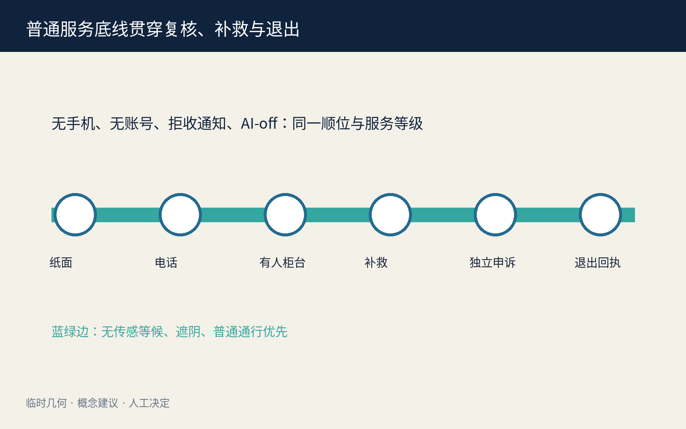
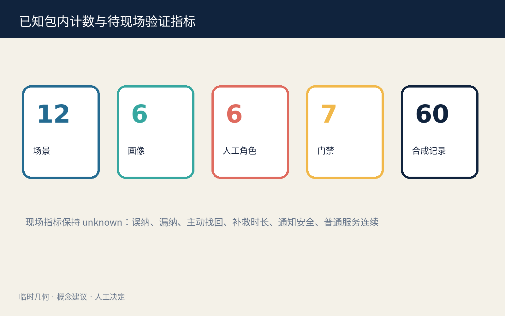

版本比较、去重、查漏、可修改通知。
状态边界: 概念建议、合成数据、临时几何；不是已批准制度、真实人群搜索或现场绩效。
总体链与三层范围

核心视觉指标
11.41 km²临时边界内部复算
20.0%设计模型值
20.9%设计模型值
12 / 6 / 4场景 / 画像 / 测试
七门人工协议
REPORTPRESERVECONFIRMSCOPEREVIEWREMEDYCLOSE
确认错误、签署纳排、决定补救、处理申诉与删除。
争议自动规则关闭；普通服务保留原顺位、时点与未结事项。
Agent.1—Agent.6
品牌、六案例、十二场景、四测试、六画像、三地标、文化与年度运营均为候选专属成果。

普通服务与蓝绿连续

专业图层与交付索引
七门责任链与临时三层范围。
众智园、AI 原点、大钟寺承担不同人工决定。
保全、范围、补救、复核四类概念任务。
纸面、电话、有人柜台、补救与申诉同顺位。
无传感等候、遮阴、通行和普通服务优先。
只表达可撤室内组件，不作拆建结论。
四个合成/共评项目，任一门失败即停止。
十二张场景卡和四项专业测试。
三项几何复算值与现场 unknown 指标分开。
公告 1.3—1.5 与 agent.1—agent.6 逐项映射。
以 self_check.json 四门结果为准。
制度、权限、通知安全、专业与现场条件待核。
来源、隐私与退出
- 只用公开/清权资料与合成记录；不检索真实个人。
- 候选关联不是风险、资格或身份标签，可拒收和退出。
- 任一门失败即停止扩展，普通人工服务继续。
- 四门结果以 self_check.json 为准，本页不自称批准。
